SVG 파일 모음
아래 항목은 모두 ZIP 안에 들어 있는 실제 SVG 파일입니다. 클릭하면 해당 파일을 저장합니다.
팀 결합 아이콘 · 14개
아카이브 효과가 직접 불러오는 원본 SVG입니다.

team-01-apuchika.svg
team-02-ommix.svg
team-03-phishing-ttuk.svg
team-04-ilkko.svg
team-05-kuro.svg
team-06-dadeullim.svg
team-07-style-lens.svg
team-08-geuneuljabi.svg
team-09-magmoa.svg
team-10-ieoon.svg
team-11-byeolungwan.svg
team-12-kokorang.svg
team-13-effect.svg
team-14-jikji-jamboree.svg개인 조각 아이콘 · 33개
기존 main-icon-fragments.js의 도형과 색상을 유지하여 개별 SVG로 저장했습니다. 현재 메인 애니메이션은 WebP 스프라이트를 사용합니다.

ahn-nagyeong
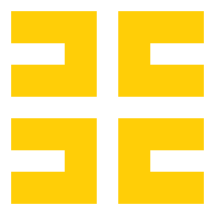
youn-taegyun
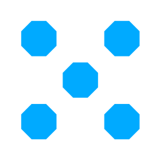
lee-nayeong
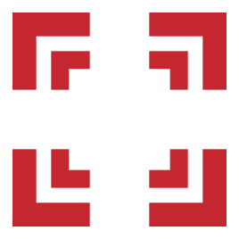
noh-minyeong
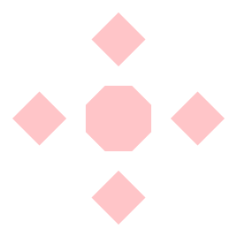
song-seungbin
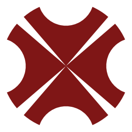
ham-daeyeonkim-jiyoo-phishing-ddook

nam-nayoung
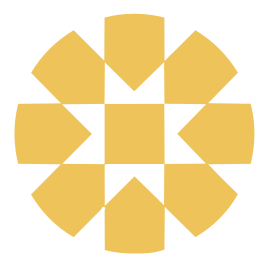
lee-goeun
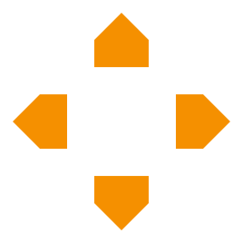
seo-yeonwoo
lim-jongwon
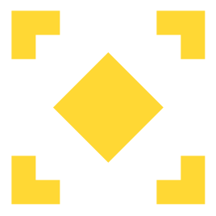
jo-eungyo
park-yuna
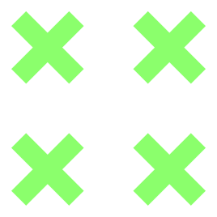
yoo-hyejinju-bomin

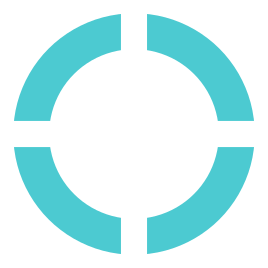
kim-doyeon
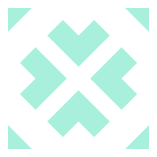
kim-sungeun
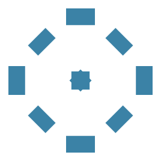
yun-jiwon
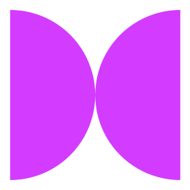
kim-dahyun
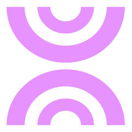
kim-hawon
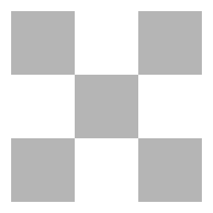
kim-minjae
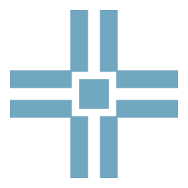
jo-wooseong
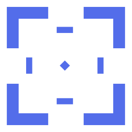
son-yejin
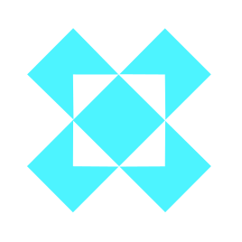
song-yujin
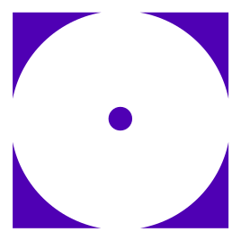
kwon-minseong
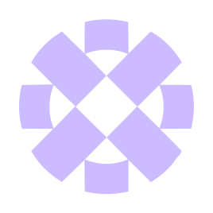
min-jiho
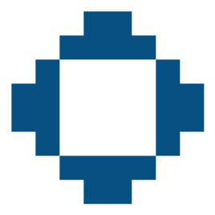
park-yoonji
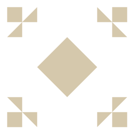
ju-yejin
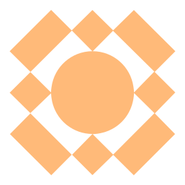
kim-jiyou-cocorang
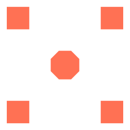
kim-jiyoon
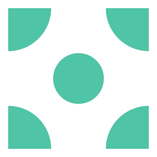
go-biju
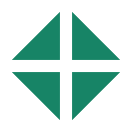
kim-hyejinkim-juyoun
벡터 참고본
아래 두 파일은 다른 페이지에서 사용하던 원본 벡터입니다. 현재 메인의 스프라이트 좌표와 일치하는 렌더링 입력으로 간주하지 마세요.